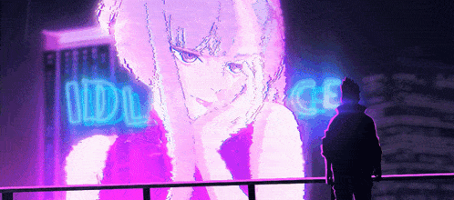

I am Zechariah Isaias M. Gajo, I was born on February 23rd 2008. I enjoy listening to music because it can help me focus on things I do or to cancel out the noises on the outside world. I am extremely insecure so I try to hide my insecurities, and it was a few years ago when it got worse, then led to depression, and it got to the point I actually attempted suicide 4 times and all of it failed. So now to prevent myself from attempting I resorted to cutting myself to cope with the thoughts.